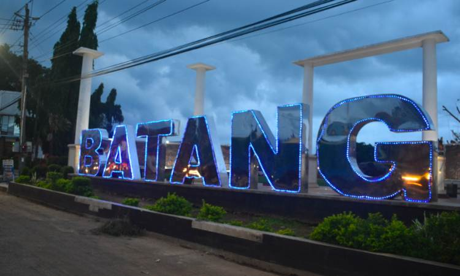

BATANG
Kota Batang
Kota Batang
Sebagian besar wilayah Kabupaten Batang merupakan perbukitan dan pegunungan. Dataran rendah di sepanjang
pantai utara tidak begitu lebar. Di bagian selatan adalah terdapat Dataran Tinggi Dieng, dengan puncaknya
Gunung Prau (2.565 meter).
Ibu kota Kabupaten Batang terletak di ujung barat laut wilayah kabupaten, yakni
tepat di sebelah timur Kota Pekalongan, sehingga kedua kota ini seolah-olah menyatu. Kabupaten Batang
terletak pada 6° 51' 46" sampai 7° 11' 47" Lintang Selatan dan antara 109° 40' 19" sampai 110° 03' 06" Bujur
Timur di pantai utara Jawa Tengah . Luas daerah 78.864,16 Ha.
Kabupaten Batang saat ini merupakan gabungan antara Jabarangkah dan Kabupaten Batang lama di Pesisiran.
Kabupaten Batang pada masa Majapahit ikut pada wilayah Mancanegara Majapahit yang bernama Kembang Jenar.
Kabupaten Batang di masa lampau juga berkaitan dengan Kerajaan Holing yang dipimpin oleh Maharani Shima.
Beberapa hipotesis terutama yang dikemukakan Van Der Meulen juga menyatakan bahwa pusat kerajaan Kalingga
terletak di Kabupaten Batang bagian Timur tepatnya di sekitar Prasasti Sojomerto saat ini. Nama kota
Lempevangih yang di Prasasti Sojomerto berkaitan dengan Wangsa Sailendra juga serupa dengan nama Limpungwangi
(Limpung) yang merupakan kecamatan yang dekat dengan keberadaan Prasasti Sojomerto saat ini.
Kabupaten Batang dapat dibagi dalam 3 periodisasi sejarah. Berdiri sebagai Kabupaten sejak awal abad 17
dan bertahan sampai dengan 31 Desember 1935. Per 1 Januari 1936, Batang secara resmi digabungkan kedalam
Pemerintahan Kabupaten Pekalongan.
Tahun 1946, mulai ada gagasan untuk menuntut kembalinya status Kabupaten Batang. Ide pertama lahir dari
Mohari yang disalurkan melalui sidang KNI Daerah dibawah pimpinan H.Ridwan. Sidang bertempat di gedung
bekas rumah Contrder Belanda (Komres Kepolisian 922).
..........................